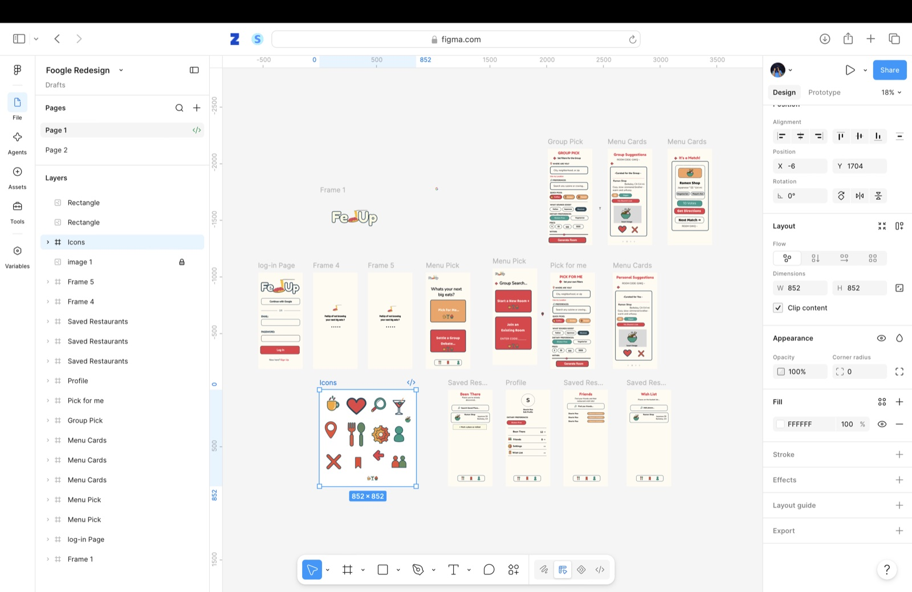

Case Study · Personal Project
Fed Up
Real-time group dining decisions, curated from your friends' actual taste.
Role: Solo designer & developer · Timeline: Ongoing personal project · Tools: Figma, Next.js, Postgres, Redis, Google Places API, Claude API, Pusher
The Problem
"Where should we eat?" is a question every friend group asks constantly — and answers badly. Existing tools either force a rigid swipe-to-match mechanic, or rely on generic star ratings that don't reflect what your specific friends actually like. I wanted to explore whether a dining-decision app could go a step further: what if recommendations were sourced from the people whose taste you actually trust, not anonymous internet reviewers?
Competitive Landscape
Before designing anything, I researched the existing space and found it more crowded than expected — MunchMatch, GroupEats, and Tonight's Bite all use nearly identical "Tinder for restaurants" pitches: swipe, match, done. This was a useful finding, not a discouraging one. It told me the underlying problem is real and validated — but it also meant a straight swipe-and-match clone wouldn't be differentiated. I needed a genuine point of view, not just another version of the same idea.
Friend-Sourced
Surface restaurants your actual friends have saved, not raw Google ratings from anonymous reviewers.
"Been There" Exclusion
Don't keep suggesting places you've already discovered — the list actively narrows as you explore.
No Mandatory Swiping
A lighter, faster decision flow for people who just want an answer, not a game to play first.
Naming
The name went through more iterations than I expected. Early options (Munchmatch, GroupEats-adjacent names, Plate Date) turned out to already be in use by real, live competitors — a good reminder to check for collisions before getting attached to a direction, not after. I landed on Fed Up — short, a little cheeky (tired of not knowing where to eat), and open enough to support a genuinely playful visual identity.
Visual Identity
Logo: the wordmark's "d" is reimagined as an illustrated plate of pasta — noodles rising from the plate into a fork, standing in for the ascender. This went through several iterations: an early version used flat vector noodles that read as a solid block rather than individual strands; I ultimately hand-illustrated the noodles in Procreate to get real texture, then imported them into Figma as a transparent asset.
Color palette: I iterated through several directions (a brighter "pop art" palette, several muted options) before settling on a Tomato & Basil palette — colors pulled directly from actual pasta ingredients, which ties the brand's visual system back to the logo's own core joke rather than feeling like an arbitrary color choice layered on top.
Key Screens
Filter Screen
Supports both quick, low-commitment cravings ("Just Drinks," "Coffee Run") and deeper filtering (cuisine, dietary restrictions, price, distance) — serving both "I need an answer in 10 seconds" and "let's actually plan tonight" moments.
Menu Cards
The core recommendation surface, styled deliberately like an actual restaurant menu (dashed dividers, a printed-card aesthetic). Each card explicitly shows whose list a recommendation is sourced from ("via Maya's List"), making the friend-sourced differentiator visible in the product itself.
Group Pick
Generates a shareable room code so a group can vote together in real time, with results converging on a single "It's a Match!" screen.

From Design to Working Product
Unlike a typical portfolio project, I took Fed Up all the way to a real, deployed product with actual backend infrastructure:
Real Authentication
Google OAuth and email/password, both fully functional.
Persistent Data
Postgres for user accounts, dietary preferences, Been There / Wish List entries, and friend relationships.
Real-Time Sync
Redis-backed room state and Pusher for live group voting sync.
Recommendation Engine
Google Places API + Claude API, weighted toward friends' saved restaurants and excluding places already marked "Been There."
- Real engineering problems
- This stage surfaced issues pure design work doesn't: debugging why a location field silently failed to update recommendations (stale cached coordinates from a "Use My Location" click), fixing OAuth redirect URI mismatches, and working through cloud infrastructure permissioning issues to get the database properly connected.
Reflection
Building Fed Up end-to-end — from competitive research and naming through visual design and into a real deployed backend — was a different kind of project than a typical Figma-only case study. It forced design decisions to hold up under actual technical constraints, and it surfaced how much of "the design is done" work still remains once real data, real auth, and real edge cases enter the picture.